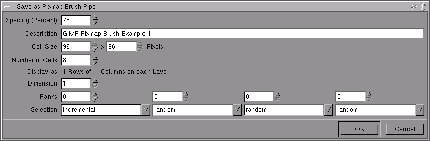
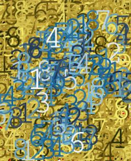
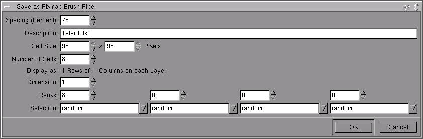
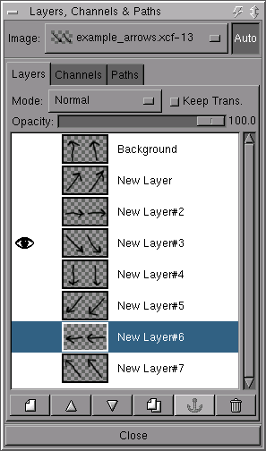
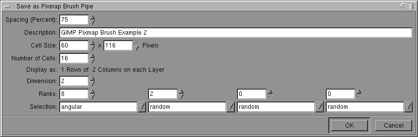
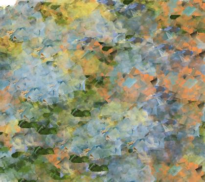
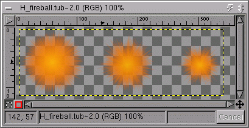
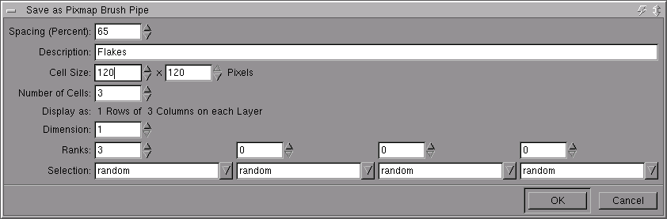

Gimp 1.1 and the soon to come 1.2 introduce alot of new features, including the ability to use full color "pixmap brushes". In addition, you can also combine single frame pixmap brushes into a "image pipe". A Gimp Image Pipe allows you to spray out series of full color pixmaps. To make it more flexible, the order the images are painted onto the campus can depend on direction, angle, speed, or other factors.
This effect can be used in many ways, from a simple way to paint repeated images, or as sophisticated texture generation. The flexibilty in the way images are sequenced and composited to the canvas on the image can make creating a imae pipe to do what you want seem difficult. However, for almost all common image pipes it is easy to set them up.

Taking a set of images and making a image pipe out of them is a common configuration. The easiest way to do this is to create each indivual image as a separate layer in an image, much like you would if you were going to save an animated image. And in fact this is often a convient way to think of image pipe creation. As designing an animation of which snapshots are going to be composited to the canvas. Lets start with a simple example image, an 8 layer image. In this case, with the numbers 1-8 on each layer. This will help to make it more obvious what the various "ranks" do.
There isnt currently a loader for gih (the gimp image pipe, so I include the source xcf images here. To start creating a image pipe, you will need to save the file in the ".gih" extension. To use the brush immediately, you probabaly want to save it in the brushes/ subdir of your gimp directory (probabaly ~/.gimp-1.1). To save the image you will be presented with a save dialog for the GIH plugin. (Image above)

For a simple image like this, the only values you usually need to change are "Spacing", The "Number of Cells", the number of "Ranks", and the "selection" for each rank. Spacing is pretty much the same as for regular brushes. It indicate what percentage of a brush width or height that the cursor moves between each time the shape is pasted. Ranks indicates how many levels of variation to use by the Selection values. For this image, the value of ranks should be equal to the number of images in the stack. Since it is possible to have multi-dimensional pipes, there needs to be a way to set more than one rank.
For this example, we are going to choose to select from the rank using method "incremental". This essential means that the images will be selected
in the order they are in the layer stack.
Other options include:
Random: selects the images in a random order.
Angular: selects the images based on the angle the brush is moving at.
Velocity: selects the images based on the velocity the brush is moving at.
Pressure: selects the images based on the pressure of the brush (requires a pressure sensitive tablet)
xtilt: selects the images based on the xtilt (also requires a tablet)
ytilt: selects the images based on the ytilt (also requires a tablet)
After saving the image, you can "refresh" the brush list and then select the new image. For an example of what this can do, tale a look at the example image above (also making use of the fun gradient brushes).

Tater Tots! This pipe is a good example of making a image pipe out of a series of images. Each layer has a a bit of an image cut out and placed on a transparent background. Any areas that are transparent in the image will be transparent in the brush as well. To add a bit more of a "3D" effect, a slight drop shadow was adding to each layer in the image. Save this image as gih with the parameters as indicated in the following screenshot.

An example of the use of this image:

An example of a two dimensional pipe
A interesting use for image pipe would be to simulate a natural media situration. For example, maybe a brush that has ten different versions based that correlate to tablet pressure.
For this example, I'll use a somewhat contrived example for simplicity sake. It will use the "angular" paramater in for per layer dimension, and a "random" paramter to select which
of the multiple images to use. I use this in a couple of brushes to "humanize" the output. Instead of having the same image stamped out over and over, it varies a little randomly.
The example source image is a 8 layer image, with each layer split in two with a guide. The guide isnt require but it makes it easier to create.
A screenshot of the layers dialog showing creation of an image of this type.(Image above)

You will want to save the image with the values show here:
Using a image pipe as a way to generate textures. Making tileable textures with gradient brushes is a tutorial on how to generate textures with just graident brushes. A lot of the same techniques that are used there can be used Image Pipes as well. The main advantage to using image pipes is that the brush as well as the color can change as you paint, which adds an extra dimension to the textures. For this example, it is just another one brush per layer situation. The example source image is available. The image is saved with the paramaters as in image above.

Example output.

Converting a PSP image tube to a gimp Image Pipe There are lots of "Image Tubes" created with and for Paint Shop Pro available on the internet. Gimp can load these files and save them as gimp image pipes. Unfortunately, unless you really like pictures of teddy bears, puppy dogs, and unicorns, finding good PSP Tubes isnt so easy. There is a .tub loader plugin in gimp that you can use to load .tub files you find on the net. Then you can turn around and save these files as a .gih file. Were going to start with a .tub file available from Hood's PSP Tubes I'll use the Fireball example on that page for this example. The file needs to be loaded as a regular image, then saved as a gih image. Sometimes you may need to make some best guesses as to the save parameters. An example of what the image window will look like after initially loading the .tub file.

Saving this file as a .gih file, and using the paramaters as shown above.
The original tutorial can be found here.